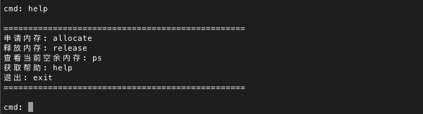
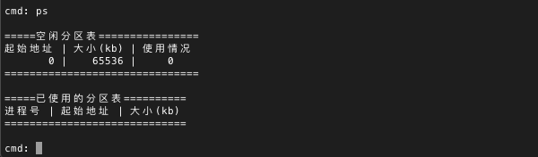
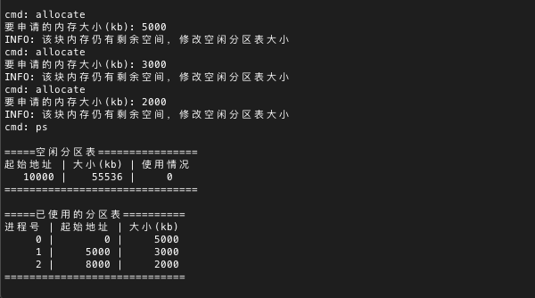
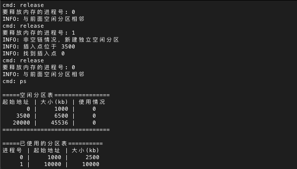

前言
操作系统系列博客的所有实验源自于课程"操作系统原理与实践检验"，代码是参考老师给的"软件工程专业操作系统实验指导书"文档后的改进版本。操作系统是计算机系统的核心，因此了解操作系统的设计和实现思路是必不可少的。了解操作系统的基本要求是：理解进程的概念，理解死锁，掌握银行家算法；掌握页式储存管理的实现原理以及页面置换法
实验目的
- 理解内存管理相关理论
- 掌握连续内存管理理论
- 掌握动态连续内存管理理论
实验内容
本实验主要针对操作系统中内存管理相关理论进行实验，要求实验者编写一个程序，该程序管理一块虚拟内存，实现内存分配和回收功能
- 模拟管理64M的内存块
- 设计内存分配函数
- 设计内存回收函数
- 实现动态分配和回收操作
- 可动态显示每个内存块信息
实验过程
数据结构，本次实验使用了三种数据结构，构成了2张表，1个双向链表，其定义如下：
- 空闲分区表：起始地址（startAddr）、大小（size）、使用情况（status）
- 已使用内存表：起始地址（startAddr）、大小（size）
- 空闲分区双向链表：空闲分区表项（table）、上一节点（previous）、下一节点（next）
内存分配算法：本次实验中使用了首次适应算法，该算法总是从内存的低地址出发，寻找第一个满足申请空间要求的空闲分区，然后将其分配给申请的进程。该算法思路简单，实现也比较简单，但是由于申请释放总是从低地址开始，因此低地址的内存碎片化会越来越严重，而高地址的内存使用次数却过少，在商业操作系统中，一般会将几种分配算法综合在一起使用。该算法的实现在下面代码汇总中的allocate函数
内存回收算法：在回收内存空间时，需要考虑以下四种情况，以达到合并连续空闲内存空间的目的
- 回收区与插入点的前一个空闲分区相邻：回收区与前一个空闲分区合并，此时只需要修改前一个空闲分区的大小（size）即可
- 回收区与插入点的后一个空闲分区相邻：回收区与后一个空闲分区合并，此时需要修改后一个空闲分区的起始地址（startAddr）和大小（size）
- 回收区与插入点的前后空闲分区都相邻：此时需要把前后空闲分区和回收区一起合并，合并到前一空闲分区中，需要修改前一空闲分区的大小（size），同时删除后一空闲分区表项
- 回收区不与任何空闲分区相邻：为回收区新建一个空闲分区表项，插入到空闲分区表的对应位置中
代码汇总
1
2
3
4
5
6
7
8
9
10
11
12
13
14
15
16
17
18
19
20
21
22
23
24
25
26
27
28
29
30
31
32
33
34
35
36
37
38
39
40
41
42
43
44
45
46
47
48
49
50
51
52
53
54
55
56
57
58
59
60
61
62
63
64
65
66
67
68
69
70
71
72
73
74
75
76
77
78
79
80
81
82
83
84
85
86
87
88
89
90
91
92
93
94
95
96
97
98
99
100
101
102
103
104
105
106
107
108
109
110
111
112
113
114
115
116
117
118
119
120
121
122
123
124
125
126
127
128
129
130
131
132
133
134
135
136
137
138
139
140
141
142
143
144
145
146
147
148
149
150
151
152
153
154
155
156
157
158
159
160
161
162
163
164
165
166
167
168
169
170
171
172
173
174
175
176
177
178
179
180
181
182
183
184
185
186
187
188
189
190
191
192
193
194
195
196
197
198
199
200
201
202
203
204
205
206
207
208
209
210
211
212
213
214
215
216
217
218
219
220
221
222
223
224
225
226
227
228
229
230
231
232
233
234
235
236
237
238
239
240
241
242
243
244
245
246
247
248
249
250
251
252
253
254
255
256
257
258
259
260
261
262
263
264
265
266
267
268
269
270
271
272
273
274
275
276
277
278
279
280
281
282
283
284
285
286
287
288
289
290
291
292
293
294
295
296
297
298
299
300
301
302
303
304
305
306
307
308
309
310
311
312
313
314
315
316
317
318
319
320
321
322
323
324
325
326
327
328
329
330
331
332
333
334
335
336
337
338
339
340
341
342
343
344
345
346
347
348
349
350
351
352
353
354
355
| # include <iostream>
# include <cstdio>
# include <vector>
# define RAM_SIZE 65536
# define ALLOC_MIN_SIZE 0
struct fpTable
{
int startAddr;
int size;
int status;
};
struct fpChain
{
fpTable *table;
fpChain *previous;
fpChain *next;
};
struct used
{
int startAddr;
int size;
};
std::vector<fpTable *> ramTable;
std::vector<used *> usedTable;
fpChain *ramChain;
void init()
{
fpTable *tableNode = new fpTable;
tableNode->startAddr = 0;
tableNode->size = RAM_SIZE;
tableNode->status = 0;
ramTable.push_back(tableNode);
fpChain *chainNode = new fpChain;
chainNode->table = tableNode;
chainNode->previous = chainNode;
chainNode->next = chainNode;
ramChain = chainNode;
}
void ps()
{
printf("\n=====空闲分区表================\n");
printf("起始地址 | 大小(kb) | 使用情况\n");
for (int i = 0; i < ramTable.size(); i++)
{
printf("%8d | %8d | %5d\n", ramTable[i]->startAddr, ramTable[i]->size, ramTable[i]->status);
}
printf("===============================\n\n");
printf("=====已使用的分区表==========\n");
printf("进程号 | 起始地址 | 大小(kb)\n");
for (int i = 0; i < usedTable.size(); i++)
{
printf("%6d | %8d | %8d\n", i, usedTable[i]->startAddr, usedTable[i]->size);
}
printf("=============================\n\n");
}
void allocate(int s)
{
if (s <= 0 || s > RAM_SIZE)
{
printf("ERROR: 参数错误！\n");
return;
}
if (ramTable.size() == 0)
{
printf("ERROR: 内存已分配完毕，申请失败！\n");
return;
}
bool find = false;
fpChain *chainPointer = ramChain;
fpTable *tablePointer = chainPointer->table;
do {
if ((tablePointer->size - s) >= ALLOC_MIN_SIZE)
{
find = true;
break;
}
else
{
chainPointer = chainPointer->next;
tablePointer = chainPointer->table;
}
} while(chainPointer != ramChain);
if (!find)
{
printf("ERROR: 内存空间不足，申请失败！\n");
return;
}
used *usedPointer = new used;
usedPointer->startAddr = tablePointer->startAddr;
usedPointer->size = s;
usedTable.push_back(usedPointer);
int pos = 0;
for (int i = 0; i < ramTable.size(); i++)
{
if (ramTable[i]->startAddr == tablePointer->startAddr)
{
pos = i;
break;
}
}
if (tablePointer->size == s)
{
printf("INFO: 该块内存分配完毕，删除空闲分区表和分区链中对应项\n");
ramTable.erase(ramTable.begin() + pos);
if (ramTable.size() == 0)
{
printf("INFO: 已无空闲分区，将空闲链表置为NULL\n");
ramChain = NULL;
}
else
{
if (chainPointer == ramChain)
{
ramChain = chainPointer->next;
}
chainPointer->next->previous = chainPointer->previous;
chainPointer->previous->next = chainPointer->next;
}
delete chainPointer;
}
else
{
printf("INFO: 该块内存仍有剩余空间，修改空闲分区表大小\n");
tablePointer->size -= s;
tablePointer->startAddr += s;
}
}
void release(int index)
{
if (index < 0 || index >= usedTable.size())
{
printf("ERROR: 参数错误！\n");
return;
}
used *usedPointer = usedTable[index];
if (ramChain == NULL)
{
fpTable *tableNode = new fpTable;
tableNode->startAddr = usedPointer->startAddr;
tableNode->size = usedPointer->size;
tableNode->status = 0;
ramTable.push_back(tableNode);
fpChain *chainNode = new fpChain;
chainNode->table = tableNode;
chainNode->previous = chainNode;
chainNode->next = chainNode;
ramChain = chainNode;
usedTable.erase(usedTable.begin() + index);
return;
}
fpChain *chainPointer = ramChain;
fpTable *tablePointer = chainPointer->table;
do {
if ((tablePointer->startAddr + tablePointer->size == usedPointer->startAddr) &&
(usedPointer->startAddr + usedPointer->size == chainPointer->next->table->startAddr))
{
printf("INFO: 与前后空闲分区都相邻\n");
tablePointer->size = tablePointer->size + usedPointer->size + chainPointer->next->table->size;
for (int i = 0; i < ramTable.size(); i++)
{
if (chainPointer->next->table->startAddr == ramTable[i]->startAddr)
{
ramTable.erase(ramTable.begin() + i);
}
}
chainPointer->next->next->previous = chainPointer->next->previous;
chainPointer->next = chainPointer->next->next;
usedTable.erase(usedTable.begin() + index);
return;
}
if (tablePointer->startAddr + tablePointer->size == usedPointer->startAddr)
{
printf("INFO: 与前面空闲分区相邻\n");
tablePointer->size += usedPointer->size;
usedTable.erase(usedTable.begin() + index);
return;
}
if (usedPointer->startAddr + usedPointer->size == tablePointer->startAddr)
{
printf("INFO: 与后面空闲分区相邻\n");
tablePointer->startAddr = usedPointer->startAddr;
tablePointer->size += usedPointer->size;
usedTable.erase(usedTable.begin() + index);
return;
}
chainPointer = chainPointer->next;
tablePointer = chainPointer->table;
} while(chainPointer != ramChain);
printf("INFO: 非空链情况，新建独立空闲分区\n");
chainPointer = ramChain;
tablePointer = chainPointer->table;
do {
if (tablePointer->startAddr > usedPointer->startAddr)
break;
else
{
chainPointer = chainPointer->next;
tablePointer = chainPointer->table;
}
} while(chainPointer != ramChain);
printf("INFO: 插入点位于 %d\n", tablePointer->startAddr);
fpTable *tableNode = new fpTable;
tableNode->startAddr = usedPointer->startAddr;
tableNode->size = usedPointer->size;
tableNode->status = 0;
for (int i = 0; i < ramTable.size(); i++)
{
if (ramTable[i]->startAddr == tablePointer->startAddr)
{
printf("INFO: 找到插入点 %d\n", i);
ramTable.insert(ramTable.begin() + i, tableNode);
break;
}
}
fpChain *chainNode = new fpChain;
chainNode->table = tableNode;
chainNode->next = chainPointer;
chainNode->previous = chainPointer->previous;
chainPointer->previous->next = chainNode;
chainPointer->previous = chainNode;
if (chainPointer == ramChain)
{
ramChain = chainNode;
}
usedTable.erase(usedTable.begin() + index);
}
void terminal()
{
char cmdstr[32];
int input;
while (1)
{
printf("cmd: ");
scanf("%s", cmdstr);
if (!strcmp(cmdstr, "exit"))
{
return;
}
if (!strcmp(cmdstr, "help"))
{
printf("\n=================================================\n");
printf("申请内存: allocate\n");
printf("释放内存: release\n");
printf("查看当前空余内存: ps\n");
printf("获取帮助: help\n");
printf("退出: exit\n");
printf("=================================================\n\n");
continue;
}
if (!strcmp(cmdstr, "ps"))
{
ps();
continue;
}
if (!strcmp(cmdstr, "allocate"))
{
printf("要申请的内存大小(kb): ");
scanf("%d", &input);
allocate(input);
continue;
}
if (!strcmp(cmdstr, "release"))
{
printf("要释放内存的进程号: ");
scanf("%d", &input);
release(input);
continue;
}
printf("cmd: 未知的命令！\n");
}
}
int main(int argc, char const *argv[])
{
init();
ps();
terminal();
return 0;
}
|
实验测试
编译运行程序
1
2
| g++ memory.cpp -o memory
./memory
|
使用help命令查看帮助信息

使用ps命令查看当前内存使用信息

使用allocate命令申请内存资源，指导书上要求至少进行10次内存申请

使用release命令释放内存资源，可以看到在释放资源时，系统会判断并合并连续可用的内存空间

总结
本次实验中，我们通过使用首次适应算法（First Fit）实现了动态的内存分配回收，实现了该模块之后，编写程序时不需要再考虑申请内存的大小，只需要在运行时动态地申请和释放内存空间即可，这增强了程序的灵活性，再辅助上交换内存之后，我们就可以使用比较小的内存去运行比内存容量大的多的程序。在现代的操作系统中，内存的分配回收使用了段页式管理的方法，在保证了内存的灵活使用同时，尽量减少了内存碎片的产生，提高了系统的吞吐量，同时也提高了程序的灵活性、可移植性和兼容性
课后思考
连续内存分配和离散内存分配相比有何优缺点？
连续内存分配提高了内存的利用率，同时便于程序在运行过程中动态地申请和释放内存，在程序的眼中，内存空间就像是无限大，编写程序时不必考虑内存容量的限制。连续内存分配也便于程序之间的信息共享，适用于多道程序系统
动态连续内存分配的难点是什么？
内存的动态分配策略和回收策略，如果系统没有选择一个好的分配回收算法，随着系统运行时间的加长，内存的碎片化会越来越严重，系统花费在维护内存分配表上的时间越来越多，导致系统吞吐量降低，甚至出现死机等问题